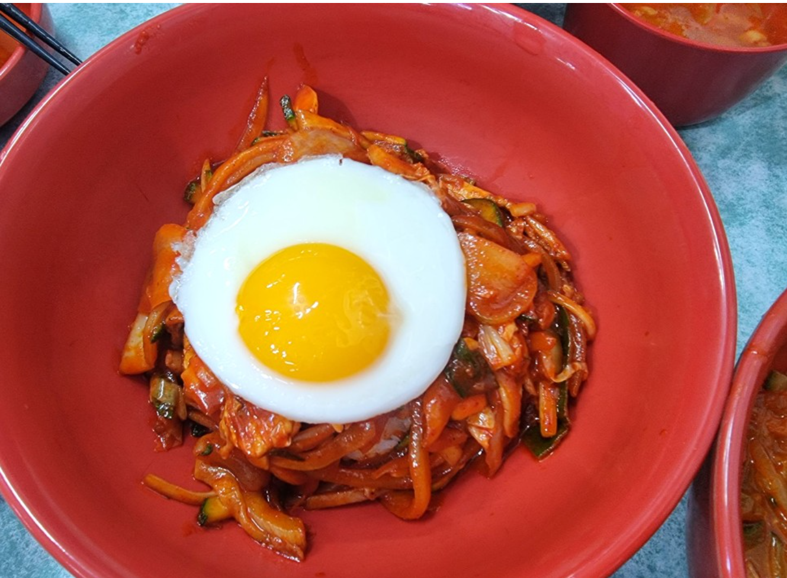
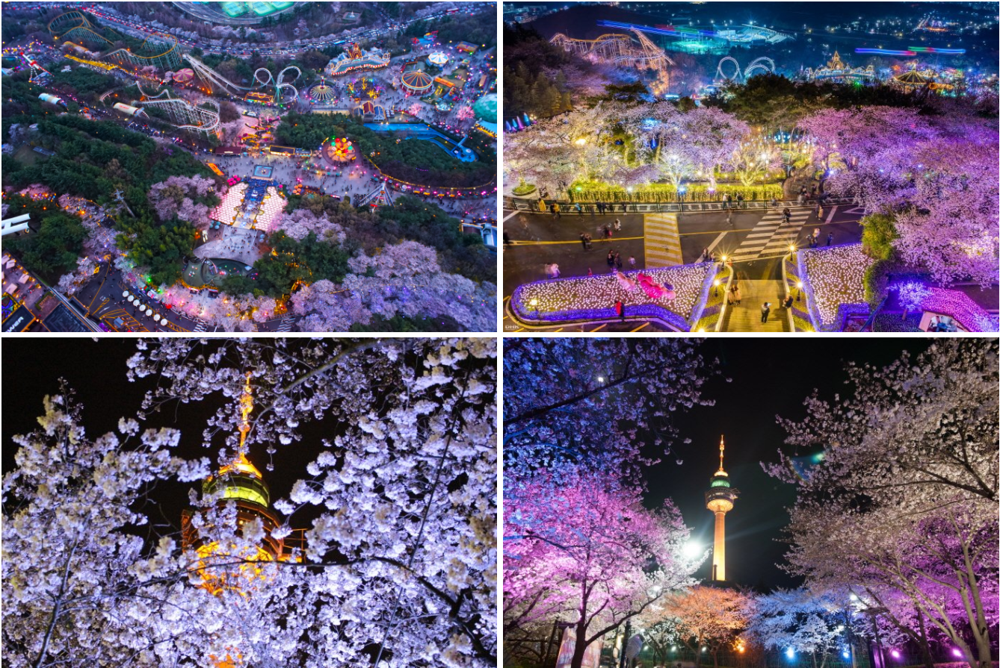

Food
대구 현지인도 인정한 음식!
실제 대구 현지인 친구한테 물어보니 대구 처음오는 사람들에겐 중화비빔밥을 꼭 먹인다고 한다. 가격도 저렴하고 짬뽕국물과 함께 먹으면 '단짠단짠'의 정석! 입에 촥촥 감기는 맛..! 불향도 과하지않고 적당히 얹혀 있어서 게눈 감추듯이 먹는다는 말이 이런게 아닐까..
⭐️⭐️⭐️⭐️⭐️
코로나가 끝나면 꼭 가서 다시 먹고 싶은 음식 중 하나이기 때문에 강추 !! 중화비빔밥은 진짜 리얼 JMT!
꿀팁 : 짬뽕을 다먹고 중화비빔밥을 먹자. 짬뽕을 다 안먹고 중화비빔밥을 먹으면 짬뽕은 맛이 없어진다..
View
김광석 다시그리기 거리를 아시나요?
故김광석 가수님의 삶과 음악을 테마로 만들어져 2009년부터 지금까지도 사랑받는 거리죠~

⭐️⭐️⭐️⭐️⭐️
대구의 인기 명소 중 한 곳인 김광석 다시그리기 거리는 벽화와 작품들을 구경할 수 있고, 포토존들이 많아서 인생샷은 덤! 좋은 추억과 사진을 얻고 싶다면? 김광석 다시그리기 거리로!
Landmark
솔직히 대구하면 이랜드가 가장 먼저 생각이 나네요.
벚꽃도 참 예쁘고, 유채꽃밭이 특히 예쁘답니다.
⭐️⭐️⭐️⭐️⭐️
에버랜드나 롯데월드에 비해 가격이 저렴하다.
데이트 장소로 제격, 꽃놀이가 하고 싶다면? 바로바로 이랜드로! 거기다 놀이공원의 야간개장으로 분위기 Up! 우리사이도 Up!
가격표
성인 입장권 ( 19세 이상 ) : 26,000원
청소년 입장권 ( 14세~19세 ) : 16,000원
어린이 입장권 ( 36개월~13세 ) : 15,000원
성인 자유이용권 ( 19세 이상 ) : 45,000원
청소년 자유이용권 ( 14세~19세 ) : 40,000원
어린이 자유이용권 ( 36개월~13세 ) : 35,000원
개방 시간 : 10:30 ~ 22:00
문의 전화 : 053-620-0001